서버리스 Serverless 아키텍처 파헤치기
서버리스(Serverless)하면 대부분 AWS Lambda 를 떠올리곤 합니다. 하지만 서버리스는 단순히 FaaS(Function-as-a-Service)만을 의미하지는 않습니다. 이번 포스트에서는 서버리스 아키텍처에 대한 개념과 키워드를 정리하고, FaaS 의 내부 구조를 살펴봅니다.
Serverless
서버리스는 말 그대로 ‘서버(Server)가 없다(-less)’는 뜻입니다. 그래서 처음 접했을 때 물리적인 서버가 아예 없고 클라이언트에서 모든 것을 처리하는 구조로 보이기도 합니다. 하지만 실제로 서버가 없는 구조는 아니고, 서버에서 처리하는 작업을 클라우드 기반의 서비스로 처리해서 서버 구축 및 관리 비용을 줄이는 구조입니다. 따라서 개발 기간과 비용을 단축할 수 있을 뿐 아니라, 서버 운영과 유지 보수의 어려움을 크게 줄일 수 있습니다.
서버리스는 두 가지 개념으로 나눌 수 있습니다.
- 서비스형 서버리스(Serviceful Serverless)
- FaaS(Functions as a Service)
두 가지 모두 서비스 형태로 무언가를 제공한다는 의미인데요. 여기서 ‘서비스’라는 의미는 소유하지 않고 사용한 만큼만 비용을 지불한다는 의미입니다. 렌트카가 좋은 예입니다. 차를 구매하지 않아도 사용할 수 있고, 사용한만큼만 비용을 지불하니까요.
그럼 이 두 영역을 좀 더 자세하게 알아봅시다.
Serviceful Serverless
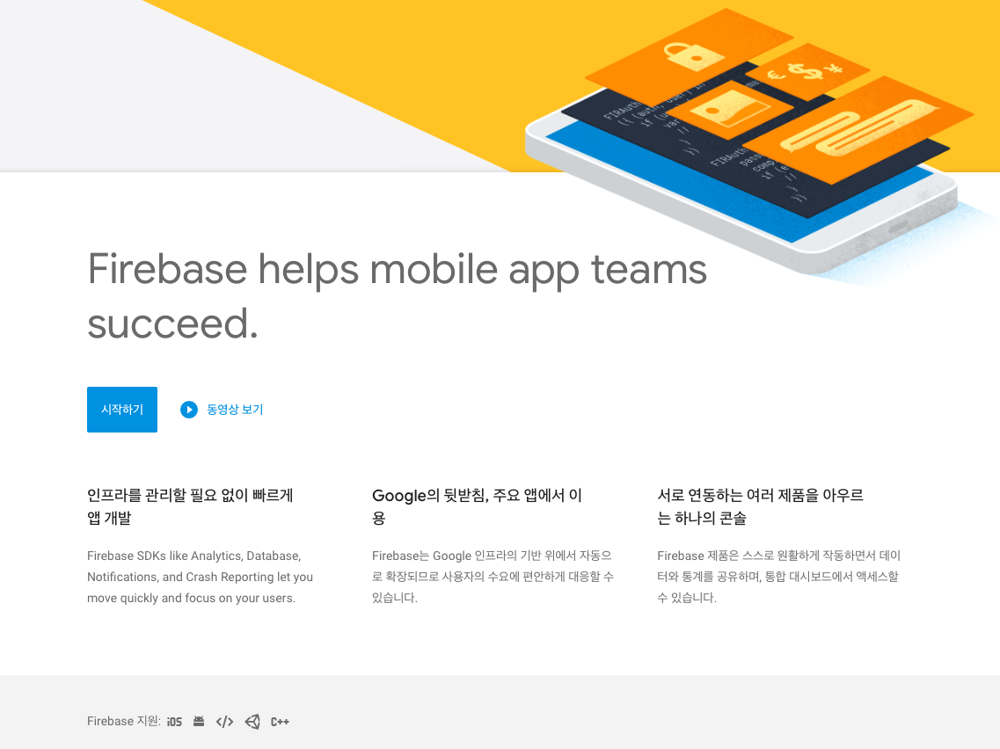
클라이언트의 사양이 좋아지고 각종 프레임워크가 발전하면서 많은 로직을 클라이언트에서 자체적으로 처리하게 되었습니다. 자연스럽게 서버의 역할은 줄어들었고, 서버에서 처리하는 작업은 단순해졌습니다.
서비스형 서버리스는 직접 서버를 구축하고 프로비저닝하고 관리할 필요 없이, 서버의 역할을 서비스 형태로 사용하는 것을 의미합니다. 예를 들어 인증의 경우, 매번 새로 구축해야 하지만 Auth0 이나 Amazon Cognito 와 같은 인증 서비스를 사용하면 대부분의 구현을 대체할 수 있습니다.
특히 Amazon Web Service 나 Google Cloud Platform 같은 Public Cloud 는 많은 종류의 서비스를 제공하고 있습니다. 단순히 컴퓨팅 리소스, 스토리지, 네트워크 뿐 아니라 머신 러닝과 모바일 백엔드, 머신 러닝, 블록체인, IoT, 그리고 인공위성 제어까지. 데이터베이스와 파일 스토리지, 메시징 서비스도 빼놓을 수 없죠. 이러한 기능을 복잡한 인프라 구성 없이 간편하게 사용할 수 있습니다.
FaaS
FaaS(Function-as-a-Service)는 함수를 서비스로 제공하는 형태입니다. 개발자는 로직이 담긴 함수 구현만 신경쓰면 됩니다.
함수(코드)를 실행하기 위해 서버를 올리고 런타임을 구성하고 코드를 배포해서 실행해야 하는 일련의 과정을 없애고, 사용자가 원하는 로직을 함수로 작성만 해놓으면 (특정 조건 하에) 함수가 실행됩니다. 좀 더 구체적으로는 함수가 호출되면 VM(또는 컨테이너)가 실행되고 해당 런타임 내에서 정의해놓은 함수가 실행됩니다. 실행 후 VM(또는 컨테이너)는 종료됩니다.
이러한 함수는 서버가 계속 대기하면서 사용자의 요청을 처리하는 것이 아니라, 이벤트가 있을 때마다 실행되는 작은 코드입니다. 따라서 주요 서비스 사이에서 간단한 작업을 처리하는 용도로 쓰이고, FaaS 는 앞서 알아본 서비스형 애플리케이션과 결합해 시너지 효과를 낼 수 있습니다.

대표적인 FaaS 는 AWS Lambda 로 AWS 의 각종 서비스와 쉽게 연동됩니다. 예를 들어 사용자가 이미지를 업로드하면 해당 이미지를 해상도별로 처리해서 S3 에 저장하는 로직을 함수로 구현할 수 있습니다. 이외에도 Lambda 홈페이지에서 다양한 사례를 찾아볼 수 있습니다.
요청이 많으면 알아서 확장도 해주니 서버에 대해 신경쓸 필요가 없습니다. 비용은 함수가 실행되는 시간과 호출된 회수만큼만 지불합니다. 서버를 띄워놓았다면 요청이 없어도 비용을 지불하겠지만 람다는 요청이 없으면 비용도 지불하지 않습니다.
AWS Lambda
FaaS 의 대표주자는 Lambda 입니다. 처음 Lambda 의 기본 개념은 간단했습니다. 그런데 서버리스의 활용도가 늘어나고 사람들의 관심이 많아지면서 AWS 는 서버리스 영역을 대폭 지원하고 있습니다.
| 항목 | 설명 |
|---|---|
| IDE | Lambda 개발 플러그인 제공 (Eclipse, Intellij, Visual Studio Code, etc.) |
| Custom Runtime 지원 | 미지원 언어의 경우 직접 런타임을 구성할 수 있도록 지원 (e.g., Ruby, Erlang, Cobol) |
| 실행 시간 | 최대 15분의 실행 시간 |
| Lambda Layers | 공통 패키지 모듈 지원으로 코드가 가벼워지고 개발 생산성 향상 |
| AWS Step Functions | Lambda 함수를 단계적으로나 병렬적으로 실행할 수 있도록 워크플로우 구성 |
| Firecraker | 서버리스 컴퓨팅에 최적화된 microVM 오픈소스 |
| Serverless Application Repository | 서버리스 애플리케이션을 공유하고 판매하는 마켓플레이스 |
AWS Lambda 외에 주목할 만한 서비스도 있습니다.
Serverless Application
그렇다면 서버리스 애플리케이션이란 어떤 유형의 애플리케이션을 말할까요?
- 클라이언트에서 사용자 인터랙션 로직을 대부분 처리
- 자주 사용하는 서버 기능은 서버리스형 서비스로 처리
- 각종 연계를 위해 사용하는 작은 함수(FaaS)
먼저 클라이언트에서 사용자와 상호작용하는 로직을 대부분을 처리해서 서버의 역할을 줄입니다. 그리고 서버에서 제공하는 기능은 서버리스형 서비스를 적극 활용하고, 각 서비스 간 로직은 FaaS 를 이용해 구현합니다.
몇 가지 애플리케이션 형태에 따른 서버리스 아키텍처를 살펴보겠습니다. 여기서 사용한 모든 서비스는 AWS 의 서비스입니다.
Web Application
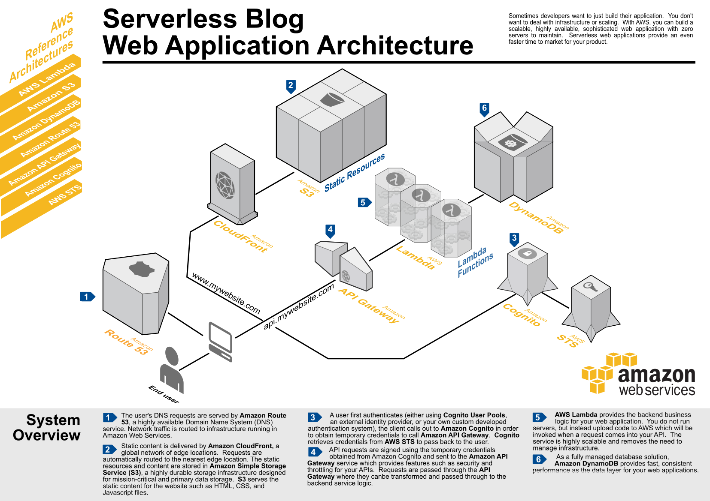
먼저 일반적인 웹 애플리케이션을 서버리스 형태로 구성한 아키텍처입니다.
- 사용자에게 보여줄 웹 페이지 및 정적 콘텐츠는 S3 에 저장 후 호스팅
- 사용자 요청은 API Gateway 로 받기
- 처리할 내용은 Lambda 에 작성
- 데이터 저장은 DB 서비스(DynamoDB) 사용
- 사용자 인증은 Amazon Cognito 사용
- Route 53으로 도메인 구입 및 제공
Mobile Backend
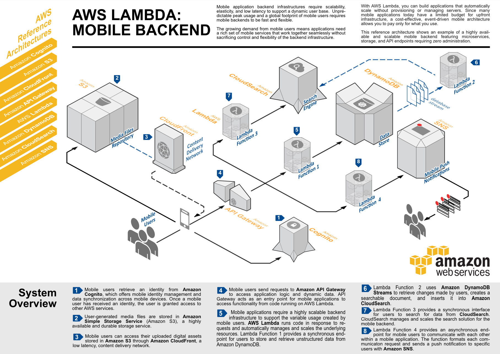
모바일 백엔드 아키텍처는 웹 애플리케이션과 비슷하지만 몇 가지 추가된 서비스가 있습니다.
- DynamoDB 에 저장하는 데이터는 람다를 이용해 검색엔진 서비스인 CloudSearch 에 저장합니다.
- SNS(Simple Notification Service)를 이용해 사용자에게 푸시를 보냅니다.
Real-time Stream Processing
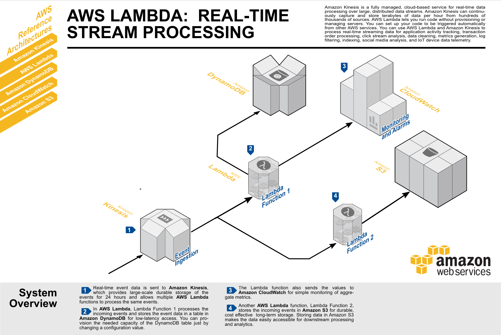
이번엔 실시간 스트림 데이터를 처리하는 아키텍처입니다.
- Kinesis 로 실시간 스트리밍 데이터를 수집합니다.
- 람다에서 들어오는 데이터를 처리하고 저장합니다.
- 이벤트 자체를 장기간 보존하기 위해 S3 에 저장합니다.
- 수집한 데이터는 CloudWatch 를 이용해 모니터링할 수 있습니다.
이러한 아키텍처 외에도 서버리스 애플리케이션을 효과적으로 설계하기 위한 디자인 패턴이 있습니다. OOP 설계를 잘하기 위해 디자인 패턴이 있는 것처럼 말이죠. 이에 대해서는 다음 포스트에서 자세히 다뤄보도록 하겠습니다.
vs. XaaS
지금까지 서버리스에 대한 개념과 아키텍처에 대해 살펴봤습니다. 더 나아가기에 앞서, FaaS 라는 개념이 와닿지 않거나 기존 IaaS, PaaS 와는 어떻게 다른지 궁금하실 수 있습니다. 이런 서비스 형태를 통틀어 XaaS 라고 부르는데요, 피자에 비유해서 이해하기 쉽게 살펴보겠습니다. 바로 Pizza-as-a-Service 입니다.[1]
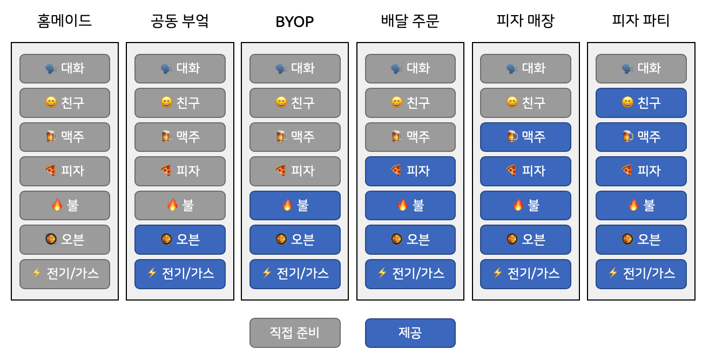
- 홈메이드: 집에서 전기와 가스, 오븐부터 피자, 맥주, 친구까지 필요한 모든 것을 준비해야 합니다.
- 공동 부엌: 돈을 내고 요리에 필요한 기구를 사용할 수 있는 공동 부엌입니다. 피자는 직접 만들어야 합니다.
- BYOP: 자기가 먹을 피자와 맥주를 직접 가져가는 Bring Your Own Plate 파티입니다.
- 배달 주문: 피자를 시켜먹는 형태입니다. 맥주는 직접 시켜야 하고 친구들도 불러야 합니다.
- 피자 매장: 친구들과 직접 매장에 가서 피자와 맥주를 사먹습니다.
- 피자 파티: 모든 것이 준비되어 있습니다. 이미 친구들도 와있습니다. 그냥 즐기기만 하면 됩니다.
이해하기 쉽게 먼저 비유를 살펴봤는데요, 이번엔 실제로 XaaS 를 비교해봅시다.
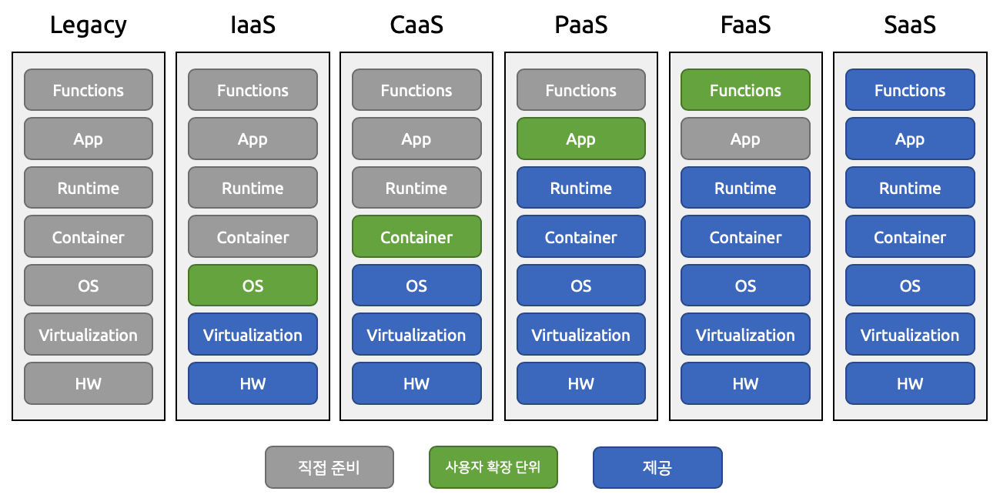
- Legacy: 기존 시스템은 인프라부터 소프트웨어까지 전부 구축하고 개발해야 합니다.
- Infrastructure-as-a-Service:필요한 하드웨어와 가상화, OS 등 인프라 요소를 서비스 형태로 제공합니다. 원하는 사양의 서버를 VM 으로 생성할 수 있습니다.
- Container-as-a-Service: 서비스 형태로 제공되는 컨테이너를 활용해 애플리케이션을 배포합니다.
- Platform-as-a-Service: 애플리케이션 개발에 집중할 수 있도록 인프라와 런타임 환경을 제공합니다.
- Function-as-a-Service: 실행할 함수 코드에만 집중할 수 있습니다.
- Software-as-a-Service: 제공되는 소프트웨어를 사용하는 형태입니다.
여기서 유사하게 보이는 PaaS 와 FaaS 의 차이점은 다음과 같습니다.
- 서버 유무: PaaS 는 그 플랫폼 위에 내 서버를 띄워야 하는 반면, FaaS 는 사용자가 관리할 서버가 없습니다.
- 확장: PaaS 는 확장이 서버 단위로, FaaS 는 함수 단위로 이루어집니다.
- 비용: PaaS 는 실행되는 서버 리소스의 스펙과 사용 시간에 따라 과금이 되고, FaaS 는 해당 함수의 호출 횟수와 수행 시간에 따라 과금됩니다.
Function 구성 요소
이번엔 함수의 기본적인 구성 요소를 살펴봅시다.
다음은 Python 으로 "Hello from Lambda!"를 출력하는 함수입니다.
1 | import json |
다음은 Ruby 로 만든 예제입니다.
1 | require 'json' |
마지막으로 Node.js 런타임에서 동작하는 JavaScript 함수입니다.
1 | exports.handler = async (event) => { |
언어는 다르지만 모두 세 가지의 구성 요소로 이루어져 있다는 걸 알 수 있습니다.
- Handler 함수: 호출 시 실행되는 함수
- Event 객체: 함수가 호출된 이벤트 정보를 담고 있는 객체
- Context 객체: 해당 함수의 컨텍스트 정보(실행 관련 정보)를 담고 있는 객체
Function 내부 구조
FaaS 는 개념적으로 보면 다음과 같이 구성되어 있습니다.
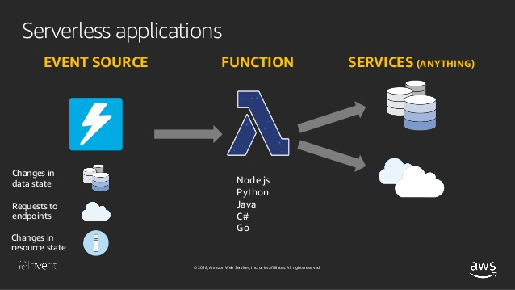
- Event Source: 함수가 실행될 조건이자 이벤트 소스 (HTTP 요청, 메시징, Cron 등)
- Function: 작업할 내용
- Service: 작업 결과를 처리(DB 저장, 다른 서비스로 전달, 메시징, 출력 등)
특정 조건 하에 이벤트가 발생하면 VM(또는 컨테이너)을 띄워서 해당 함수를 실행하고, 해당 결과를 지정한 대로 처리하게 됩니다. 여기서 함수를 실행하려면 해당 함수를 실행할 수 있는 환경이 필요한데요, 이를 런타임이라고 합니다. 당연한 얘기지만, 런타임은 해당 함수를 어떤 언어로 작성하느냐에 따라 다를 것입니다. Node.js, Python, Java 등 실행에 필요한 환경이 미리 설치되어 있어야 합니다.[2]
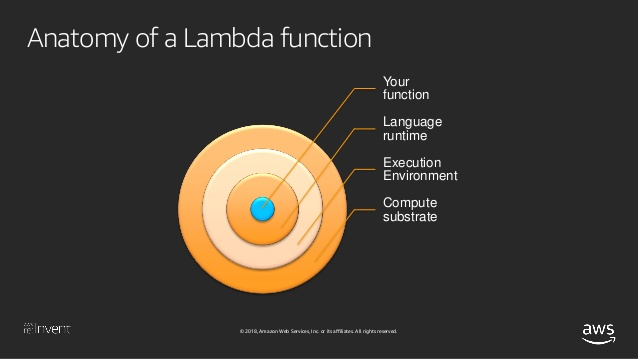
위 그림은 함수를 좀 더 자세히 들여다본 그림입니다.
- Compute substrate: 함수가 실행될 VM(또는 컨테이너)입니다.
- Execution Environment: 그 위에 환경 변수 등 실행 환경이 포함됩니다.
- Language runtime: 그 위에 언어별 런타임이 올라갑니다. 언어에 따라 성능 차이가 생깁니다 (e.g. Python vs. Node.js)
- Your function: 마지막으로 우리가 작성한 코드 조각이 있습니다.
FaaS 성능 최적화
FaaS 는 항상 띄워놓은 서버에 비해서 확실히 자원을 적게 소모하고 비용을 줄일 수 있습니다. 그런데 문제가 하나 있습니다. 서버에서 요청이 있을 때마다 VM 이나 컨테이너를 띄운다? 바로 성능 이슈가 생깁니다.
이번 섹션에서는 FaaS 의 성능을 향상시킬 수 있는 방법에 대해 알아봅니다.
Cold Start Delay
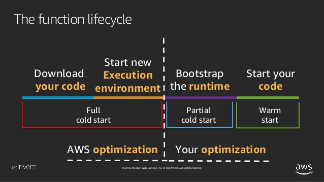
위 그림은 AWS Lambda 함수의 라이프사이클입니다. 처음에 해당 함수 코드를 찾아 다운로드하고 새로운 실행 환경을 구성합니다. 이 과정을 차갑게 식은 서버를 실행하는 것에 비유해 콜드 스타트(Cold Start)라고 합니다. 함수를 처음 호출할 때나 업데이트 된 후 실행할 경우 어쩔 수 없이 발생하는 지연(delay)입니다.
그렇다면 이런 콜드 스타트 지연을 어떻게 줄일 수 있을까요? 함수가 실행되고 나면 이후에 또 다른 호출을 대비해서 실행 컨텍스트를 잠깐 동안 유지합니다. 따라서 해당 서버가 아직 내려가지 않은 따뜻한(warm) 상태라면 준비 과정을 거치지 않고 빠르게 함수가 수행됩니다. 이를 이용해 주기적으로 함수를 호출하도록 스케줄링하면, 서버가 내려가지 않도록 warm 상태를 유지하게 됩니다.
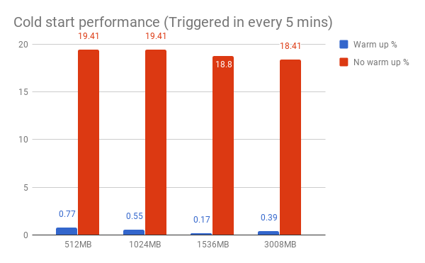
5분 마다 지속적으로 함수를 실행시켰더니 지연이 확실히 줄어든 걸 보실 수 있습니다. 하지만 계속해서 호출하다보니 비용이 추가적으로 발생합니다.
주의할 점은 컨텍스트가 동일하게 계속해서 유지될거란 보장은 없다는 겁니다. 콜드 스타트를 줄이기 위해서 해당 컨텍스트를 재사용하지만, 어떠한 이유로라도 서버는 새로운 컨텍스트를 생성할 수 있습니다. 따라서 컨텍스트가 재사용될 것을 염두에 두고 해당 컨텍스트에 저장된 값을 다른 함수에서 재사용해서는 안됩니다.
Execution Environment
위 그림은 람다 함수를 자세히 들여다 본 그림입니다. 위에서 한 번 본 그림이죠? 이번에 함수의 성능 향상을 위해서 살펴볼 부분은 서버 위에 구성될 실행 환경입니다.
이 실행 환경의 성능을 개선하려면 메모리를 더 하는 수밖에 없습니다. 람다의 경우 메모리만 지정할 수 있고 다른 리소스는 메모리를 기준으로 자동 할당됩니다. 물론 그만큼 비용은 더 지불해야 합니다. 빠른 성능을 원하면 돈을 더 내야하는 거죠. 여기서 재미있는 점은 돈을 많이 낸다고 성능이 그에 비례하게 올라가진 않는다는 점입니다. 즉, 가성비를 따져봐야 합니다.
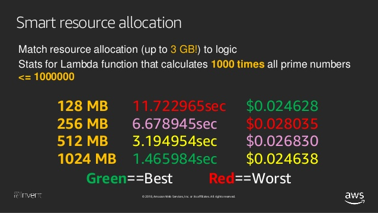
위 그림을 보면 메모리를 더 많이 할당할수록 소요되는 시간이 줄어들어 성능이 향상된 걸 볼 수 있습니다. 하지만 비용은 256MB, 512MB 보다 1024MB 일 때가 더 저렴합니다. $0.00001 추가 비용으로 성능을 10배 정도 높인 셈입니다.
재미있는 점은 람다의 경우 호출 횟수와 메모리 사용량을 보고 과금을 한다는 점인데, 메모리만 적게 쓴다면 CPU 또는 네트워크를 많이 사용하더라도 비용을 적게 낼 수 있습니다.
Function
마지막으로 함수 영역을 최적화할 수 있는 방법입니다.
- 함수는 처음 콜드 스타트할 때만 처음부터 끝까지 실행하고, 재사용할 때는 진입점인 핸들러 함수만 실행합니다. 따라서 필요치 않은 초기화 로직은 핸들러 밖으로 빼서 중복 실행되는 것을 막습니다.
- 라이브러리와 프레임워크는 꼭 필요한 것만 사용하고, 무거운 것보다는 가벼운 것을 사용합니다(e.g. Spring -> Dagger, Guice).
- 코드를 간결하게 유지해야 합니다. 처음에 함수의 코드를 다운로드하고 압축을 풀기 때문에 코드의 양이 적을수록 좋습니다.
- 모든 로직을 하나의 함수에 담는 것보다 여러 작은 함수로 쪼개는 것이 좋습니다. 시간이 오래 걸리는 작업이 있을 경우 전체 리소스가 전부 대기해야 하기 때문입니다. 이런 경우 AWS Step Functions 를 이용해 서버리스 워크플로우를 구성하는 것도 하나의 방법입니다.
이외에도 함수 코드를 작성할 때 참고할만한 팁입니다.
- 핵심 로직에서 핸들러(진입점) 함수를 분리하면 단위 테스트를 더 많이 생성할 수 있습니다.
- 람다 환경 변수를 활용해 하드 코딩을 없앱니다.
- 재귀 함수 호출은 사용하지 않는 것이 좋습니다.
참고
- Revisiting “Serverless Architectures”
- Full-Stack Development in the Era of Serverless Computing
- Optimizing Your Serverless Applications
Related Posts
- [kubernetes-cluster-on-google-compute-engine-for-developers]
- [spring-boot-containerization-and-ci-cd-to-kubernetes-cluster]
- [it-infrastructure-basics]
- [docker-container-basics]
서버리스 Serverless 아키텍처 파헤치기